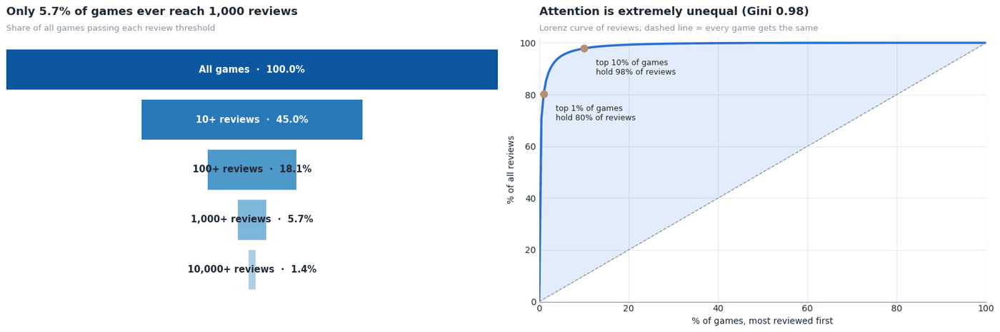
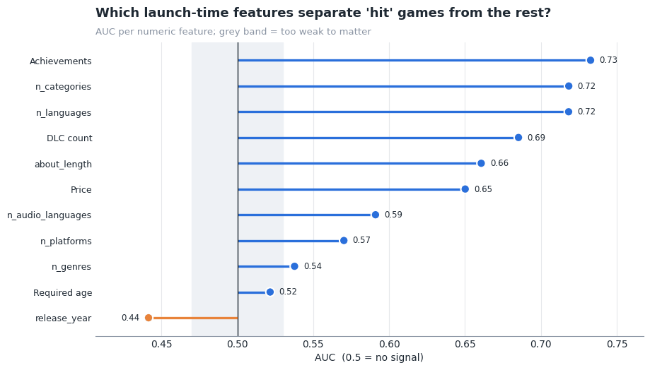
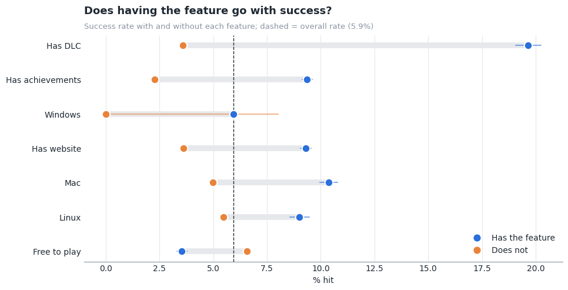
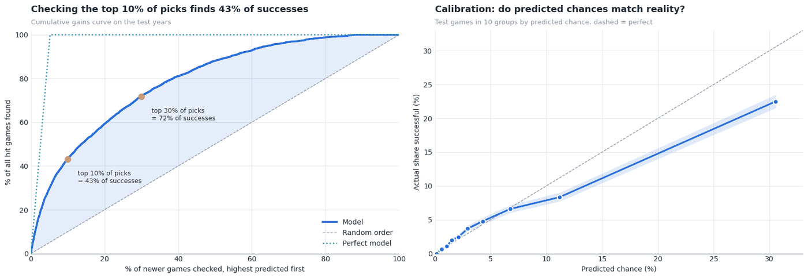

What makes a Steam game successful?
Defining success fairly across 125,855 Steam games, testing which launch-time features go with it, and predicting hits with SQL and Python.
- Data
- Steam Games Dataset (Kaggle), 125,855 games
- Tools
- pandas, DuckDB, SQL, scikit-learn, SHAP
- Type
- Personal project, Kaggle notebook
The question
What does "successful" mean for a game on Steam, which features known at launch go with success, and how well can a model predict it before the market has spoken?
The data, and a broken file
The raw file had 39 column names but 40 values in every row: two names were glued together ("DiscountDLC count"). Read naively, every column after it shifts by one and the AppID column holds game names. I fixed the header before loading, cleaned the data in pandas and stored it as a small relational model in DuckDB, with separate bridge tables for genres and tags so questions like "success rate per genre" become a plain SQL join.
Lossless type changes cut the tables from 148.9 MB to 53.4 MB in memory, and Parquet stores them in 10.2 MB on disk, four times smaller than CSV.
Defining success
Attention on Steam is winner-takes-most: the top 1% of games hold 80% of all reviews. "Above average" is therefore a misleading target, so I defined success as a top percentile, in four ways:
- Commercial: top 10% by owners within its release year, so old games aren't favoured just for being old
- Quality: at least 50 reviews and 80% positive
- Engagement: top 10% by median playtime
- Hit: commercial and quality at once, the strictest label (5.9% of games)
Reach and quality turned out to be different things: owners and positive-review share are uncorrelated, and only 26% of commercial hits are also well liked.


Which launch-time features matter?
Achievements (AUC 0.73), the number of Steam categories (0.72) and the number of supported languages (0.72) separate hits from other games best. The biggest yes/no gap is DLC: 19.6% of games with DLC are hits, against 3.6% without. Among genres, RPG has the highest lift (1.5x the average success rate).




Predicting hits
A gradient boosting model trained only on launch-time facts, on games up to 2021 and tested on later ones, reaches AUC 0.80 for the hit label. Its top 10% of predictions contain 43% of the actual hits. A developer's track record adds another 0.03 AUC.


What to keep in mind
- These are associations, not causes: successful games can afford more languages and DLC, so some indicators follow success rather than drive it.
- Owner counts are estimated buckets, so commercial success is approximate.
- The biggest drivers, such as marketing, wishlists, the quality of the game itself and luck, are not in this data.